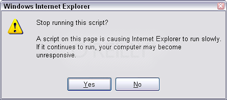

Johan Bjurling / Fredrik Wärnsberg
var h = document.getElementsByTagName("head")[0];
var l = document.createElement("link");
l.href = "css/theme/netlight.css";
l.rel = "stylesheet";In this section Johan will explain what it means that Javascript functions are first class.
In Javascript, functions are objects and can thus be treated just like objects
function myFunction() {
alert("myFunction");
}
alert(myFunction instanceof Object);They can be stored in variables
var f = function myFunction() {
alert("myFunction");
}
f();They can be sent as arguments to other functions
function myFunction(f) {
f();
}
They can be returned from functions
function myFunction() {
return function() {
alert("johan");
};
}They can have properties
function myFunction() {
alert("alert!");
}
myFunction.myProperty = "something";They can be properties
var myObject = {
myFunctionAsProperty: function() { alert("yeah"); }
};They can be extended
Function.prototype.curry = function() {
var fn = this, slice = [].slice, args = slice.call(arguments);
return function() {
return fn.apply(this, args.concat(
slice.call(arguments)));
};
};A simple example
function makeClosure() {
var name = "Johan";
return function() {
alert(name);
};
}A somewhat more advanced example
function makeAdder(x) {
return function(y) {
return x + y;
};
}Emulate privacy (Module Pattern)
var myModule = (function() {
var privateCounter = 0;
function changeBy(val) {
privateCounter += val;
}
return {
increment: function() {
changeBy(1);
},
decrement: function() {
changeBy(-1);
},
value: function() {
return privateCounter;
}
};
})();
Creating closures inside loops
Closures in loops
var arrayOfFunctions = [];
for (var i = 0; i < 3; i++) {
arrayOfFunctions[i] = function() { alert(i); };
}
alert(this); // [object Window]
window.name = "A name";
var test = function(){
alert(this);
};
test();
var object = {
name: 'A Name',
greet: function(greeting){
alert(greeting + this.name);
}
};
object.greet('Hello, ');
window.name = "window's name";
var object = {
name: 'An object',
init: function(){
var self = this;
var test = function(){
alert(this.name);
alert(self.name);
}
test();
}
};
object.init(); var object = {
name: "A name",
test: function(greeting){ alert(greeting + this.name); }
}
var stolen = object.test;
stolen("Hello, ");
Function.prototype.call(context, arg1, arg2, ...argN);Function.prototype.apply(context, [args]); stolen.call(obj, "Bonjour, ");
stolen.apply(obj, ["Guten tag, "]);
Function.prototype.bind = function(context){
var __func = this,
slice = [].slice,
args = slice.call(arguments, 1);
return function(){
args = args.concat(slice.call(arguments, 0));
__func.apply(context, args);
};
}; stolen.bind(obj).greet('Hello, ');User me = TwitterUserSerivce.getUser("warnsberg");
List<User> followers = TwitterUserService.getFollowers(me);
List<Tweets> tweets = new ArrayList<Tweets>();
tweets.addAll(TwitterService.loadRecentTweets(followers));
System.out.println(Joiner.on(", ").join(tweets));
When it needs to do something that won't return immediately, it is done asynchronously.
twitter.getUser(callbackFunction);twitter.getUser({
success: function(user){ console.log(user); }
});
twitter.getUser(function(error, user){ /* check if there was an error */ });twitter.getUser({
success: function(user){ /* ... */ },
error: function(error){ /* ... */ }
});
User me = TwitterUserSerivce.getUser("warnsberg");
List<User> followers = TwitterUserService.getFollowers(me);
List<Tweets> tweets = new ArrayList<Tweets>();
tweets.addAll(TwitterService.loadRecentTweets(followers));
System.out.println(Joiner.on(", ").join(tweets));Hang tight, because this we're going to over lots of things quickly.
twitter.getUser("warnsberg", {
success: function(user){
},
error: function(error){
console.log('Couldn\'t load tweets :(');
}
}); twitter.getUser("warnsberg", {
success: function(user){
twitter.getFollowers(user, {
success: function(followers){
},
error: function(error){
console.log('Couldn\'t load tweets :(');
}
});
},
error: function(error){
console.log('Couldn\'t load tweets :(');
}
}); twitter.getUser("warnsberg", {
success: function(user){
twitter.getFollowers(user, {
success: function(followers){
twitter.loadRecentTweets(followers, {
success: function(tweets){
console.log(tweets.join(', '));
},
error: function(error){
console.log('Couldn\'t load tweets :(');
}
});
},
error: function(error){
console.log('Couldn\'t load tweets :(');
}
});
},
error: function(error){
console.log('Couldn\'t load tweets :(');
}
}); Named functions saves the day!
var twitterError = function(error){
console.log('Couldn\t load tweets :(');
};
var loadUser = function(){
twitter.getUser('warnsberg', {
success: loadFollowers,
error: twitterError
});
}
var loadFollowers = function(user){
twitter.getFollowers(user, {
success: loadTweets,
error: twitterError
});
}
var loadTweets = function(followers){
twitter.loadRecentTweets(followers, {
success: printTweets,
error: twitterError
});
};
var printTweets = function(tweets){
console.log(tweets.join(', '));
}
Composing small, re-usable parts.
asyncFunction(callback(err, result){}); var twitterError = function(error){
console.log('Couldn\t load tweets :(');
};
var loadUser = function(next){
if(err) return next(err);
twitter.getUser('warnsberg', next);
}
var loadFollowers = function(err, user, next){
if(err) return next(err);
twitter.getFollowers(user, next);
}
var loadTweets = function(err, followers, next){
if(err) return next(err);
twitter.loadRecentTweets(followers, next);
});
async.waterfall([loadUser, loadFollowers, loadTweets],
function(err, tweets){
if(err) return console.log('Twitter error :(');
console.log(tweets.join(', '));
}
);
Giving async operations an object representation.
var promise = new Promise();
promise.resolve(value);
promise.reject(error);
promise.then(callback);
var promise = new Promise();
promise.then(function(value){
/* ... */
}).then(function(value){
/* ... */
}, function(error){
console.log('Error: ', error);
});twitter.getUser('warnsberg').then(function(user){
return twitter.getFollowers(user);
}).then(function(followers){
return twitter.loadRecentTweets(followers);
}).then(function(tweets){
console.log(tweets.join(', '));
}, function(error){
console.log('Couldn\'t load tweets :(');
});
spawn(function*() {
try {
let user = yield twitter.getUser('warnsberg');
let followers = yield twitter.getFollowers(user);
let tweets = yield twitter.loadRecentTweets(followers);
console.log(tweets.join(', '));
} catch(e) {
console.log('Couldn\'t load tweets :(');
}
});
Classical inheritance
Prototype inheritance
You inherit from an actual object, not from a class (blueprint). The inheritance is reflected in the "Prototype Chain".
This means prototype based inheritance is in fact much more similar to real life.
How is an object's prototype determined?
function Sheep() {
}
How can this be used for inheritance?
Let's make a Pig Sheep
Let's make a Pig Sheep
function Sheep() {
}
Sheep.prototype.eyeColor = "blue";
function PigSheep() {
}
In Javascript...